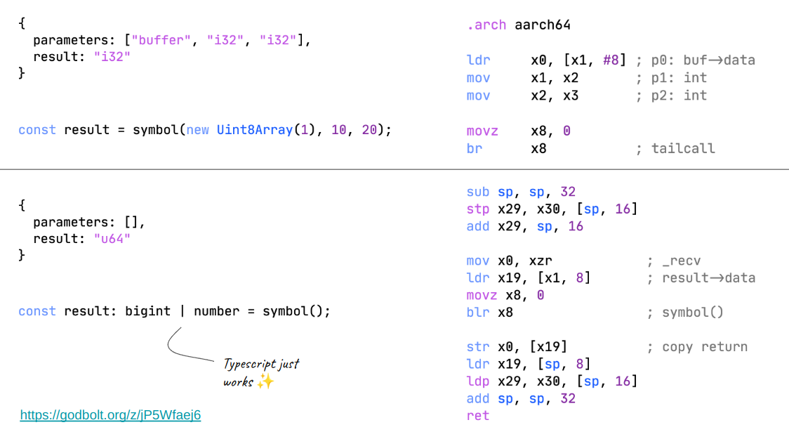

19 August 2024
Warning: Work in progress document.
This document describes the internals of Deno 2. This is intended to be a digestable doc for developers who are interested in contributing to Deno or just people who want to understand how it works.
Deno is one of the largest open-source Rust projects with ~1k contributors and 15 active contributors.
Disclaimer: This is a living document and may not be up-to-date.
Deno 2 is set to release in October 2024. There have been many deprecations and release candidates leading up to this release.
Deno uses the standard cargo build system. It has two executable
entrypoints in cli/main.rs and
cli/mainrt.rs.
Building is as simple as:
git clone https://github.com/denoland/deno --recurse-submodules
cd deno
cargo buildA few cruical things happen during the build process:
cargo build -p deno --bin denotarget/debug/deno test -A --config tests/config/deno.json tests/unit/webcrypto_test.ts --filter "rsa keygen"cargo build -p deno --bin deno --features hmrYou don’t have to rebuild Deno when making changes to the builtin JS/TS source.
cargo-plonk:cargo install cargo-plonkTODO: cargo-plonk
Deno has several ways to handling TypeScript code depending on the context. It uses swc for type-stripping and bundling and the TypeScript compiler (tsc) for LSP & type-checking.
tsc is written in JS and runs in a seperate V8 isolate with its own
custom snapshot. cli/tsc/
contains the code for the tsc bindings.
00_typescript.js is the bundled source of the official
TypeScript compiler. 01_main_compiler.js is the entrypoint
for exeucting the compiler.
A seperate custom V8 snapshot is created during build time for these sources.
TODO: swc emit
Most Deno built-ins and Web APIs are written in JavaScript and dispatch to Rust for the actual operation via the “op” system. Because of this there is a lot of JavaScript that needs to executed before user code runs. To avoid parsing and compiling this JavaScript on every startup, Deno leverages V8 snapshots to preprocess these builtins into a native format that can be quickly loaded into V8.
The build script is responsible for generating JavaScript snapshots for built-ins and the TypeScript compiler.
| Index | Context |
|---|---|
| 0 | VM_CONTEXT_INDEX |
| 1 | MAIN_CONTEXT |
Native functions and objects allocated during snapshot
Deno uses Tokio for its event loop. Tokio is an asynchronous runtime for Rust that provides I/O operations, task scheduling and message-passing primitives. Deno uses a single-threaded Tokio runtime but I/O tasks maybe also be spawned on a threadpool.
The event loop integrates with V8’s microtask queue to run JavaScript microtasks and drive pending promises to completion.
Async ops are scheduled on the event loop and provide a way to run
Rust futures and resolve associated JavaScript promises. This is how
most of the I/O APIs like Deno.readFile are
implemented.
JsRuntime::poll_event_loopThis drives Deno’s event loop. The code for
poll_event_loop is pretty self-explanatory if you’re
familiar with Rust futures and should make integration with V8’s
microtask queue clearer.
Let’s take a look at the things that happen: TODO.
spawn_blockingtokio::task::spawn_blocking may be used when a CPU-bound
task if its too expensive or may end up blocking the main thread. The
task is spawned on Tokio’s threadpool. It’s used extensively in Deno for
WebCrypto computations and asynchronous file I/O.
Perf tip: Sometimes it’s better to avoid spawn_blocking
for CPU bound tasks when either the task is too small or the overhead of
spawning a new thread is too high.
Deadlocks: It is possible to deadlock the event loop when the
threadpool is saturated and tasks depend on each other. It is not common
but currently Deno.flock suffers from this issue.
“ops” are the way Deno exposes Rust functionality to JavaScript. They are the bridge between the JavaScript runtime and the Rust runtime.
Ops are analogous to syscalls in a operating system. They are used for I/O, networking, file system access, etc.
Here’s a radial tree of all ops in Deno (there are about ~840 of them):
Resources are Rust-allocated objects that are referenced by JavaScript code. Think of them as file descriptors. Resources may or may not correspond to a real operating system file descriptor, they may store arbitrary data for stateful operations or I/O handles.
There are 2 categories of resources in Deno.
deno_core::ResourceJS integers that are allocated by the privileged side of Deno which refer to various rust objects that need to be persisted between various ops. For example, network sockets are resources.
A resource implements a read, write and
close method.
deno_core::GarbageCollectedTypically resources must be explicitly closed by the user. However,
in some cases, it is desirable to have resources that are automatically
closed when they are no longer referenced by JavaScript code. This is
where GarbageCollected resources come in.
GarbageCollected resources are automatically
de-allocated when the JavaScript object that references them is garbage
collected.
Cppgc (Oilpan) is a tracing C++ garbage collector hosted through V8.
It is used to manage the lifetimes of GarbageCollected
resources. rusty_v8’s cppgc module provides a Rust
interface to Cppgc.
Deno has a fine-grained permission system that allows users to control what operations a script can perform. Permissions are requested by the script and granted by the user.
Almost all of permission checks happen in the ops itself. An op that
does reads from a network resource is responsible for checking the
net permission.
Tip: If an op creates a resource that will be required for future ops, a one-time permission check during creation is usually sufficient.
deno_permission crate is the home for all permission
related code that manages permission state, parsing allowlists, user
prompts, and checks.
There are 2 ways to do permission checks in an op:
PermissionsContainer
(recommended).Much like any other state, permission state are stored in the
OpState with type
deno_permission::PermissionsContainer.
state
.borrow_mut::<PermissionsContainer>()
.check_read(path, "Deno.readFile")?;pub trait NetPermission {
fn allow_net(&mut self, url: &url::Url) -> bool;
}
#[op]
pub fn fetch_url<P>(
state: &mut OpState,
url: String,
) where P: NetPermission + 'static
{
state.borrow_mut::<P>().allow_net(&url)?;
// ...
}This may be desirable when you want to give other embedders the flexibility to change the permission check logic.
Front-facing built-in APIs in Deno are mostly written in JavaScript and TypeScript. Some of them resort to calling Rust ops for part of their functionality.
Code for built-ins is spread all over the codebase. It all comes
together and exposed to the user at
runtime/js/90_deno_ns.js and
runtime/js/global_scope_window.js. As the names suggest,
these are one of the last modules to be loaded and setup APIs for the
global Deno namespace and global objects.
Each extension crate usually numbers it’s built-in JS modules prefixed with a incrementing numbers. The order of these numbers is important as it determines the order in which the built-ins are loaded.
$ ls ext/webgpu
00_init.js
01_webgpu.js
02_surface.js
...A lot of effort has been put into making Deno compatible with Node.js
runtime APIs. Located at ext/node, it is the largest
extension crate in Deno 2.
Node-API (previously known as N-API) is the C API for building native addons for Node.js. It provides a stable ABI across different versions of Node.js. Deno implements this API to provide compatibility with Node.js native modules.
Symbols are defined using the napi_sym macro.
#[napi_sym::napi_sym]
pub fn napi_get_boolean(
env: *mut Env,
value: bool,
result: *mut napi_value,
) -> Result {
let _env: &mut Env = env.as_mut().ok_or(Error::InvalidArg)?;
// ...
Ok(())
}Symbol definition files are manually generated. It is a file
containing the symbols that need to be put into the executable’s dynamic
symbol table at link-time. This is done using /DEF: on
Windows, -exported_symbol,_ on macOS and
--export-dynamic-symbol= on Linux.
Note: On ancient glibc systems, the
--export-dynamic-symbolflag is not supported. In this case, all symbols are exported by default. This results in a larger binary size.
Deno.serve is the primary HTTP API server in Deno. It is
a high-level API built on top of multiple ops that handle accepting
connections, reading requests, writing responses, etc.
Deno.serve((request: Request) => {
return new Response("Hello World");
});Deno.dlopen is the API for loading shared libraries and
calling symbols from them. It is heavily optimized for performance.
const sdl2 = Deno.dlopen("libSDL2.so", {
"SDL_Init": {
"parameters": ["u32"],
"result": "i32",
},
"SDL_GetPlatform": {
"parameters": [],
"result": "pointer",
},
// ...
});
if (sdl2.symbols.SDL_Init(0) != 0) {
throw new Error("Failed to initialize SDL2");
}It depends on libffi for conversions and
dynasmrt for generating trampoline to enable V8 fast API
calls. This is esentially a specialized JIT compiler that generates
efficient conversions from V8 fast call values to symbol parameters.

I have a blog post on Turbocall JIT: https://littledivy.com/turbocall.html
fastwebsockets is a fast RFC 6455 compliant WebSocket implementation
in Rust. It powers new WebSocket (client) and
Deno.upgradeWebSocket (server) APIs in Deno.